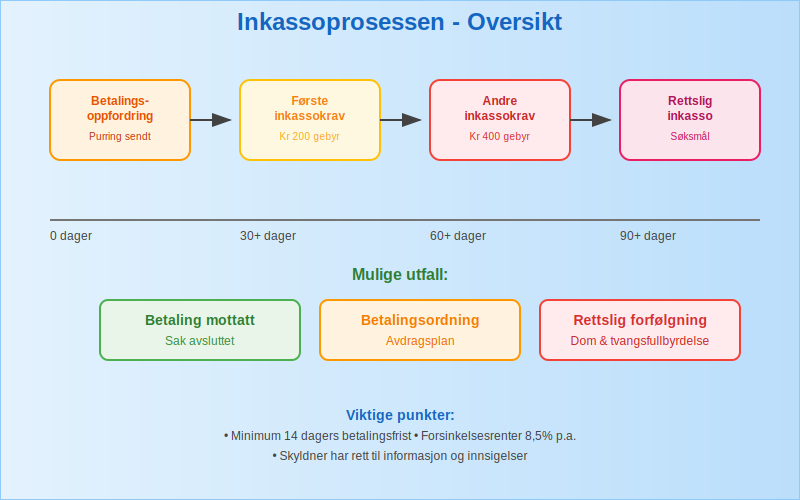
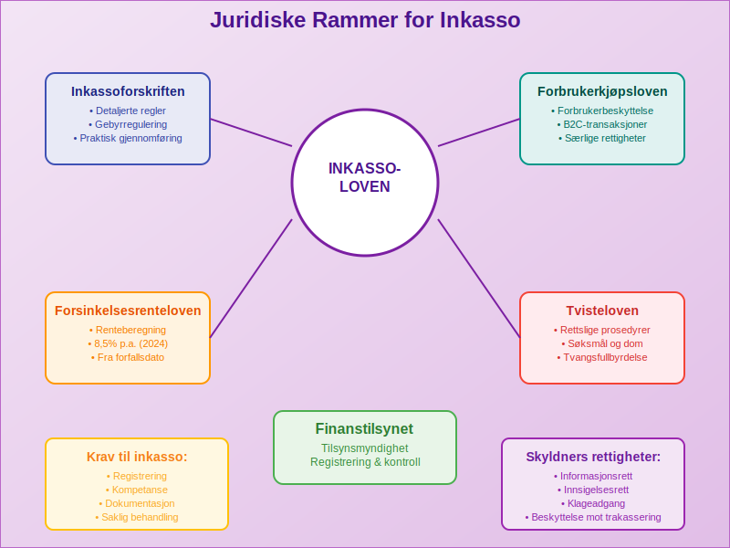
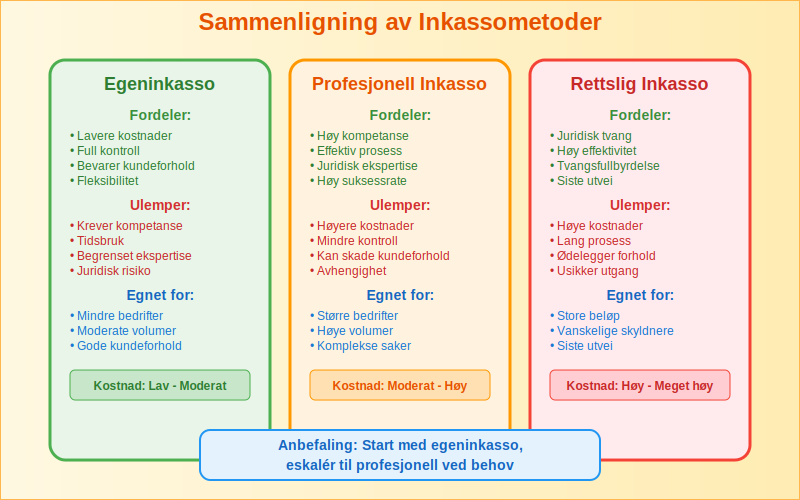
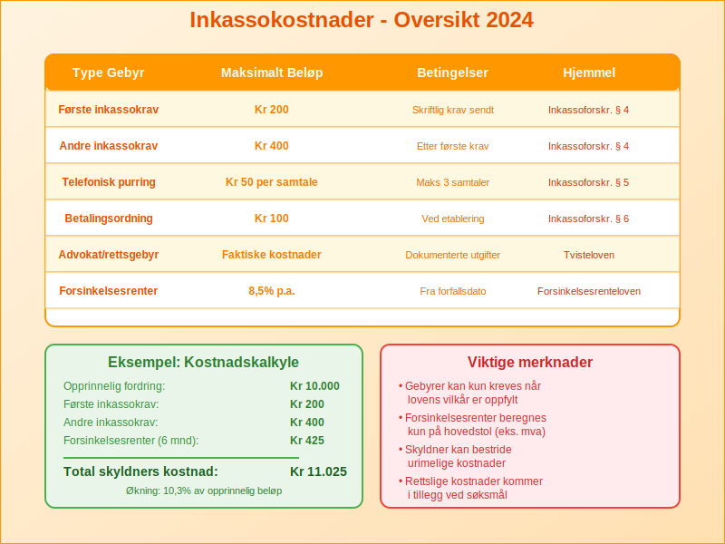
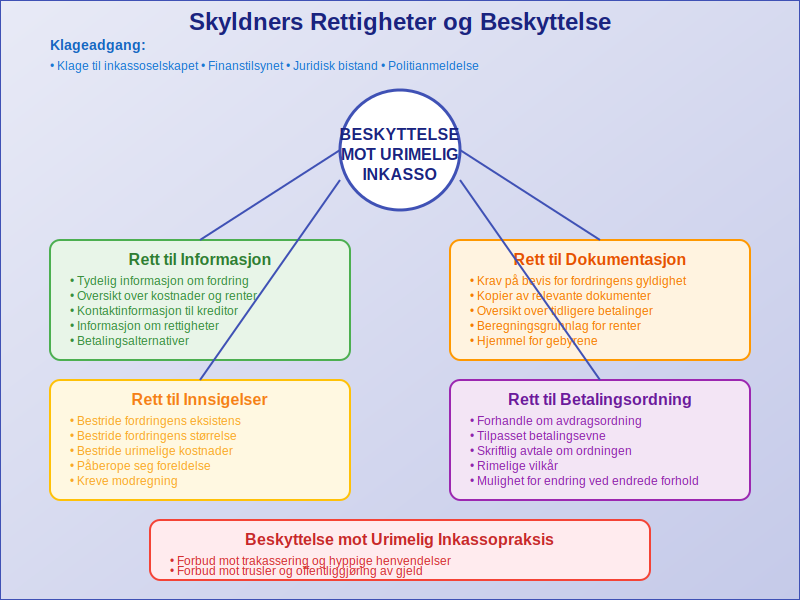
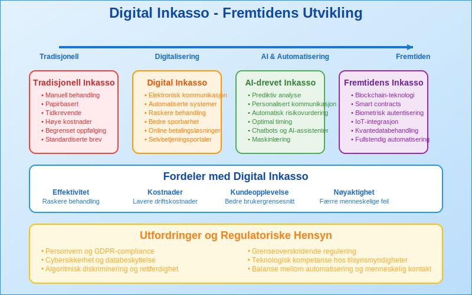

Inkasso er prosessen med å kreve inn forfalte fordringer og ubetalt gjeld på vegne av en kreditor. Dette er en viktig del av fordringshåndtering som sikrer at bedrifter får betalt for sine varer og tjenester. Inkassovirksomhet er strengt regulert i Norge og må følge spesifikke juridiske rammer for å beskytte både kreditorer og skyldnere. Hvis en fordring fortsatt ikke blir betalt etter inkasso, kan det føre til en betalingsanmerkning som gir en offentlig merknad om betalingsmislighold.
For en detaljert gjennomgang av purring og purregebyr, se Hva er purring og purregebyr.
I tillegg gir Gjeldsregisteret en oversikt over all usikret forbruksgjeld og kan brukes som et supplement til inkassoinformasjon ved kredittvurdering.
For ytterligere informasjon om tvangsfullbyrdelse kan du lese om Namsmannen.
Les også vår detaljerte artikkel om Tvangsfullbyrdelse. Les vår grundige guide til Utleggsforretning.
Seksjon 1: Hva er Inkasso?
Inkasso er en formell prosess som starter når vanlige betalingsoppfordringer ikke har ført til betaling. Prosessen kan utføres av kreditor selv (egeninkasso) eller av profesjonelle inkassoselskaper.

Hovedformål med Inkasso
Inkassovirksomhet har flere viktige formål:
- Innkreving av forfalte fordringer og sikring av betalingsevne
- Beskyttelse av kreditors rettigheter og økonomiske interesser
- Opprettholdelse av betalingsdisiplin i næringslivet
- Forebygging av betalingsproblemer gjennom tidlig intervensjon
- Balansering av interesser mellom kreditor og skyldner
Seksjon 2: Juridiske Rammer for Inkasso
Inkassovirksomhet i Norge er regulert av flere lover og forskrifter som sikrer rettferdig behandling av alle parter. Inkassoloven er den primære reguleringen som etablerer rammene for all inkassovirksomhet og beskytter skyldneres rettigheter. Denne loven suppleres av forbrukerkjøpsloven og inkassoforskriften.

Viktige Lover og Forskrifter
| Lov/Forskrift | Hovedområde | Anvendelse |
|---|---|---|
| Inkassoloven | Regulering av inkassovirksomhet | Alle inkassosaker |
| Inkassoforskriften | Detaljerte regler og gebyrer | Praktisk gjennomføring |
| Forbrukerkjøpsloven | Forbrukerbeskyttelse | B2C-transaksjoner |
| Forsinkelsesrenteloven | Beregning av forsinkelsesrenter | Alle forfalte fordringer |
| Tvisteloven | Rettslige prosedyrer | Rettssaker og tvangsfullbyrdelse |
Krav til Inkassovirksomhet
For at inkasso skal være lovlig, må følgende krav oppfylles:
- Registrering: Profesjonelle inkassoselskaper må være registrert hos Finanstilsynet
- Kompetanse: Personell må ha nødvendig juridisk og faglig kompetanse
- Dokumentasjon: All kommunikasjon må dokumenteres og arkiveres
- Informasjonsplikt: Skyldner må informeres om sine rettigheter
- Saklig behandling: Kommunikasjonen må være respektfull og saklig
Seksjon 3: Typer Inkasso
Det finnes flere ulike former for inkasso, hver med sine særegne karakteristika og anvendelsesområder. Valg av inkassometode avhenger av faktorer som fordringens størrelse, skyldners situasjon og kreditors preferanser.

Oversikt over Inkassometoder
Egeninkasso
Egeninkasso er når kreditor selv driver inkassovirksomhet:
- Fordeler: Lavere kostnader, full kontroll, bevaring av kundeforhold
- Ulemper: Krever intern kompetanse, tidsbruk, begrenset ekspertise
- Egnet for: Mindre bedrifter med moderate inkassovolumer
Profesjonell Inkasso
Profesjonelle inkassoselskaper håndterer inkassoprosessen:
- Fordeler: Høy kompetanse, effektiv prosess, juridisk ekspertise
- Ulemper: Høyere kostnader, mindre kontroll
- Egnet for: Større bedrifter med høye inkassovolumer
Rettslig Inkasso
Når frivillig inkasso ikke fører frem, kan saken bringes inn for domstolene:
- Søksmål: Formell rettssak for å få dom
- Tvangsfullbyrdelse: Gjennomføring av dom med tvangsmidler
- Konkurs: Siste utvei ved alvorlig betalingsudyktighet
Seksjon 4: Inkassoprosessen Steg-for-Steg
En systematisk inkassoprosess øker sannsynligheten for vellykket innkreving og sikrer overholdelse av juridiske krav. Prosessen følger en strukturert tilnærming fra første kontakt til eventuell rettslig behandling.
Fase 1: Forberedelse og Vurdering
Før inkasso starter, må følgende vurderes:
- Fordringens gyldighet: Er den opprinnelige fakturaen korrekt?
- Skyldners betalingsevne: Har skyldner mulighet til å betale?
- Dokumentasjon: Er alle nødvendige dokumenter tilgjengelige?
- Kostnads-nytte vurdering: Er inkasso økonomisk forsvarlig?
Fase 2: Første Inkassokrav
Det første inkassokravet må inneholde:
- Tydelig identifikasjon av kreditor og skyldner
- Detaljert oversikt over hovedstol, forsinkelsesrenter (også kalt morarente) og gebyrer
- Betalingsfrist (minimum 14 dager)
- Informasjon om konsekvenser ved manglende betaling
- Kontaktinformasjon for henvendelser og forhandlinger
Fase 3: Oppfølging og Forhandling
Hvis første krav ikke fører til betaling:
- Andre inkassokrav med tydeligere konsekvenser
- Telefonisk kontakt for direkte dialog
- Forhandling om betalingsordning hvis aktuelt
- Vurdering av rettslige skritt som neste fase
Fase 4: Rettslig Behandling
Ved manglende respons på frivillig inkasso:
- Forberedelse av søksmål med juridisk bistand
- Innlevering til domstol med alle nødvendige dokumenter
- Rettssak og dom som grunnlag for tvangsfullbyrdelse
- Tvangsfullbyrdelse gjennom namsmannen
Seksjon 5: Inkassokostnader og Gebyrer
Inkassokostnader er regulert av inkassoforskriften og kan kreves fra skyldner når visse betingelser er oppfylt. Kostnadene skal være rimelige og stå i forhold til arbeidet som er utført.

Lovlige Inkassogebyrer (2024)
| Type Gebyr | Maksimalt Beløp | Betingelser |
|---|---|---|
| Første inkassokrav | Kr 200 | Skriftlig krav sendt |
| Andre inkassokrav | Kr 400 | Etter første krav uten respons |
| Telefonisk purring | Kr 50 per samtale | Maksimalt 3 samtaler |
| Betalingsordning | Kr 100 | Ved etablering av ordning |
| Advokat/rettsgebyr | Faktiske kostnader | Dokumenterte utgifter |
Forsinkelsesrenter
I tillegg til gebyrer kan kreditor kreve forsinkelsesrenter fra forfallsdato:
- Rentesats: 8,5% per år (2024)
- Beregningsgrunnlag: Hovedstol eksklusiv mva
- Beregningsperiode: Fra forfallsdato til betaling skjer
- Sammensatt rente: Renter påløper ikke renter
Kostnader ved Rettslig Inkasso
Ved rettslig behandling kan følgende kostnader påløpe:
- Saksomkostninger: Domstolsgebyrer og prosessuelle kostnader
- Advokatutgifter: Juridisk bistand og representasjon
- Tvangsfullbyrdelse: Namsmyndighetenes gebyrer og kostnader
- Sikkerhetsstillelse: Eventuell sikkerhet for saksomkostninger
Seksjon 6: Skyldners Rettigheter og Beskyttelse
Inkassoloven gir skyldnere viktige rettigheter og beskyttelse mot urimelig inkassopraksis. Disse rettighetene skal sikre balanse mellom kreditors behov for innkreving og skyldners behov for rettferdig behandling.

Grunnleggende Rettigheter
Skyldnere har følgende grunnleggende rettigheter:
- Rett til informasjon: Tydelig informasjon om fordring og kostnader
- Rett til dokumentasjon: Krav på dokumentasjon av fordringens gyldighet
- Rett til innsigelser: Mulighet til å bestride fordringen
- Rett til betalingsordning: Forhandling om avdragsordning
- Rett til klage: Klageadgang ved urimelig behandling
Beskyttelse mot Urimelig Inkasso
Inkassoloven forbyr følgende praksis:
- Trakassering: Hyppige eller urimelige henvendelser
- Trusler: Ulovlige trusler om konsekvenser
- Offentliggjøring: Offentlig omtale av gjelden
- Urimelige kostnader: Gebyrer som overstiger lovlige rammer
- Villedende informasjon: Feilaktig eller misvisende opplysninger
Klageadgang og Tilsyn
Ved urimelig inkassopraksis kan skyldner:
- Klage til inkassoselskapet direkte
- Kontakte Finanstilsynet som fører tilsyn
- Søke juridisk bistand ved alvorlige brudd
- Anmelde straffbare forhold til politiet
Seksjon 7: Regnskapsføring av Inkasso
Korrekt regnskapsføring av inkassoaktiviteter er viktig for å opprettholde oversikt over fordringer og kostnader. Dette påvirker både driftsresultatet og likviditeten.
Kontering av Inkassoaktiviteter
Inkassogebyrer som Inntekt
Når bedriften krever inkassogebyrer:
- Debet: Kundefordringer (økning av fordring)
- Kredit: Andre driftsinntekter (gebyr som inntekt)
Forsinkelsesrenter
Påløpte forsinkelsesrenter konteres som:
- Debet: Kundefordringer
- Kredit: Renteinntekter
Inkassokostnader
Kostnader til eksterne inkassoselskaper:
- Debet: Inkassokostnader (driftskostnad)
- Kredit: Leverandørgjeld eller bank
Avsetninger for Tap
Ved usikre fordringer må bedriften vurdere avsetninger:
- Individuelle avsetninger: For spesifikke risikoutsatte fordringer
- Generelle avsetninger: For portefølje av fordringer
- Nedskrivning: Når tap anses som sannsynlig
Seksjon 8: Digitalisering og Fremtidens Inkasso
Inkassoindustrien gjennomgår en digital transformasjon som påvirker både effektivitet og kundeopplevelse. Moderne teknologi muliggjør mer målrettet og kostnadseffektiv inkasso.

Digitale Inkassoløsninger
Automatiserte Systemer
- AI-basert risikovurdering: Automatisk vurdering av betalingsevne
- Personaliserte kommunikasjonsstrategier: Tilpasset kommunikasjon basert på skyldnerprofil
- Automatisk oppfølging: Systematisk oppfølging uten manuell intervensjon
- Integrerte betalingsløsninger: Enkle betalingsmuligheter direkte i inkassokrav
Forbedret Kundeopplevelse
- Selvbetjeningsportaler: Skyldnere kan administrere sine saker online
- Fleksible betalingsordninger: Automatisk beregning og tilbud om avdragsordninger
- Transparent kommunikasjon: Tydelig oversikt over fordring og kostnader
- Mobilvennlige løsninger: Tilgang via smartphone og nettbrett
Regulatoriske Utfordringer
Den digitale utviklingen skaper nye regulatoriske utfordringer:
- Personvern: GDPR-krav til behandling av personopplysninger
- Cybersikkerhet: Beskyttelse av sensitive finansielle data
- Algoritmisk diskriminering: Sikring av rettferdig behandling
- Grenseoverskridende inkasso: Harmonisering av europeiske regler
Seksjon 9: Internasjonalt Inkasso
For bedrifter med internasjonale kunder blir grenseoverskridende inkasso stadig viktigere. Dette krever kunnskap om ulike lands juridiske systemer og kulturelle forskjeller.
Utfordringer ved Internasjonalt Inkasso
- Ulike juridiske systemer: Forskjellige lover og prosedyrer
- Språkbarrierer: Kommunikasjon på fremmedspråk
- Kulturelle forskjeller: Ulike forretningskulturer og betalingstradisjoner
- Valutarisiko: Svingninger i valutakurser
- Høyere kostnader: Kompleksitet øker kostnadene betydelig
EU-regulering
Innenfor EU/EØS gjelder spesielle regler:
- Europeisk betalingsordre: Forenklet prosedyre for ubestridte krav
- Småkravsprosedyre: Effektiv behandling av mindre fordringer
- Harmoniserte regler: Felles standarder for inkassovirksomhet
- Gjensidig anerkjennelse: Dommer anerkjennes på tvers av landegrenser
Konklusjon
Inkasso er en kompleks og viktig del av moderne forretningsdrift som krever grundig forståelse av juridiske rammer, prosedyrer og beste praksis. Enten bedriften velger egeninkasso eller profesjonelle tjenester, er det essensielt å følge lovkravene og behandle skyldnere med respekt.
Den digitale utviklingen skaper nye muligheter for mer effektiv og kundevennlig inkasso, samtidig som den stiller nye krav til personvern og sikkerhet. Fremtidens inkasso vil være preget av automatisering, personalisering og økt fokus på skyldnerens opplevelse.
For bedrifter er det viktig å ha en helhetlig tilnærming til fordringshåndtering som balanserer behovet for innkreving med opprettholdelse av gode kundeforhold. Korrekt regnskapsføring og systematisk oppfølging av inkassoaktiviteter er avgjørende for å opprettholde likviditet og finansiell stabilitet.